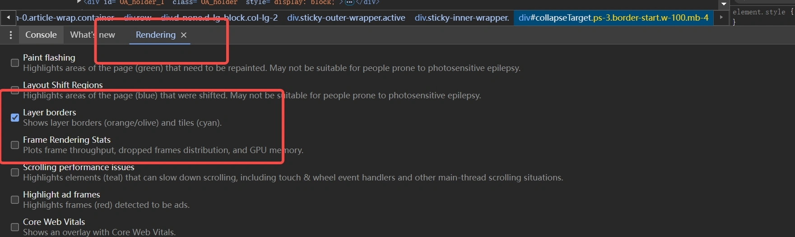

浏览器内核（渲染进程）
页面的渲染，JS 的执行，事件的循环，都在浏览器的渲染进程内进行。
请牢记，浏览器的渲染进程是多线程的主要常驻线程:
GUI 渲染线程
- 负责渲染浏览器界面，解析 HTML，CSS，构建 DOM 树和 RenderObject 树，布局和绘制等。
- 当界面需要重绘（Repaint）或由于某种操作引发回流(reflow)时，该线程就会执行
- 注意，GUI 渲染线程与 JS 引擎线程是互斥的，当 JS 引擎执行时 GUI 线程会被挂起（相当于被冻结了），GUI 更新会被保存在一个队列中等到 JS 引擎空闲时立即被执行。
JS 引擎线程
- 也称为 JS 内核，负责处理 Javascript 脚本程序。（例如 V8 引擎）
- JS 引擎线程负责解析 Javascript 脚本，运行代码。
- JS 引擎一直等待着任务队列中任务的到来，然后加以处理，一个 Tab 页（renderer 进程）中无论什么时候都只有一个 JS 线程在运行 JS 程序
- 同样注意，GUI 渲染线程与 JS 引擎线程是互斥的，所以如果 JS 执行的时间过长，这样就会造成页面的渲染不连贯，导致页面渲染加载阻塞。
事件触发线程
- 归属于浏览器而不是 JS 引擎，用来控制事件循环（可以理解，JS 引擎自己都忙不过来，需要浏览器另开线程协助）
- 当 JS 引擎执行代码块如 setTimeOut 时（也可来自浏览器内核的其他线程,如鼠标点击、AJAX 异步请求等），会将对应任务添加到事件线程中
- 当对应的事件符合触发条件被触发时，该线程会把事件添加到待处理队列的队尾，等待 JS 引擎的处理
- 注意，由于 JS 的单线程关系，所以这些待处理队列中的事件都得排队等待 JS 引擎处理（当 JS 引擎空闲时才会去执行）
定时触发器线程
- 传说中的
setInterval与setTimeout所在线程 - 浏览器定时计数器并不是由 JavaScript 引擎计数的,（因为 JavaScript 引擎是单线程的, 如果处于阻塞线程状态就会影响记计时的准确）
- 因此通过单独线程来计时并触发定时（计时完毕后，添加到事件队列中，等待 JS 引擎空闲后执行）
- 注意，W3C 在 HTML 标准中规定，规定要求 setTimeout 中低于 4ms 的时间间隔算为 4ms。
- 传说中的
异步 http 请求线程
- 在 XMLHttpRequest 在连接后是通过浏览器新开一个线程请求
- 将检测到状态变更时，如果设置有回调函数，异步线程就产生状态变更事件，将这个回调再放入事件队列中。再由 JavaScript 引擎执行。
再说一点，为什么 JS 引擎是单线程的？额，这个问题其实应该没有标准答案，譬如，可能仅仅是因为由于多线程的复杂性，譬如多线程操作一般要加锁，因此最初设计时选择了单线程。。。
Browser 进程和浏览器内核（Renderer 进程）的通信过程
如果自己打开任务管理器，然后打开一个浏览器，就可以看到：任务管理器中出现了两个进程（一个是主控进程，一个则是打开 Tab 页的渲染进程）， 然后在这前提下，看下整个的过程：(简化了很多)
- Browser 进程收到用户请求，首先需要获取页面内容（譬如通过网络下载资源），随后将该任务通过 RendererHost 接口传递给 Render 进程
- Renderer 进程的 Renderer 接口收到消息，简单解释后，交给渲染线程，然后开始渲染
- 渲染线程接收请求，加载网页并渲染网页，这其中可能需要 Browser 进程获取资源和需要 GPU 进程来帮助渲染
- 当然可能会有 JS 线程操作 DOM（这样可能会造成回流并重绘）
- 最后 Render 进程将结果传递给 Browser 进程
- Browser 进程接收到结果并将结果绘制出来
这里绘一张简单的图：（很简化）
看完这一整套流程，应该对浏览器的运作有了一定理解了，这样有了知识架构的基础后，后续就方便往上填充内容。
这块再往深处讲的话就涉及到浏览器内核源码解析了，不属于本文范围。
如果这一块要深挖，建议去读一些浏览器内核源码解析文章，或者可以先看看参考下来源中的第一篇文章，写的不错
GUI 渲染线程与 JS 引擎线程互斥
由于 JavaScript 是可操纵 DOM 的，如果在修改这些元素属性同时渲染界面（即 JS 线程和 UI 线程同时运行），那么渲染线程前后获得的元素数据就可能不一致了。
因此为了防止渲染出现不可预期的结果，浏览器设置 GUI 渲染线程与 JS 引擎为互斥的关系，当 JS 引擎执行时 GUI 线程会被挂起， GUI 更新则会被保存在一个队列中等到 JS 引擎线程空闲时立即被执行。
JS 阻塞页面加载
从上述的互斥关系，可以推导出，JS 如果执行时间过长就会阻塞页面。
譬如，假设 JS 引擎正在进行巨量的计算，此时就算 GUI 有更新，也会被保存到队列中，等待 JS 引擎空闲后执行。 然后，由于巨量计算，所以 JS 引擎很可能很久很久后才能空闲，自然会感觉到巨卡无比。
所以，要尽量避免 JS 执行时间过长，这样就会造成页面的渲染不连贯，导致页面渲染加载阻塞的感觉。
WebWorker，JS 的多线程？
前文中有提到 JS 引擎是单线程的，而且 JS 执行时间过长会阻塞页面，那么 JS 就真的对 cpu 密集型计算无能为力么？
所以，后来 HTML5 中支持了Web Worker。
MDN 的官方解释是：
这样理解下：
- 创建 Worker 时，JS 引擎向浏览器申请开一个子线程（子线程是浏览器开的，完全受主线程控制，而且不能操作 DOM）
- JS 引擎线程与 worker 线程间通过特定的方式通信（postMessage API，需要通过序列化对象来与线程交互特定的数据）
所以，如果有非常耗时的工作，请单独开一个 Worker 线程，这样里面不管如何翻天覆地都不会影响 JS 引擎主线程， 只待计算出结果后，将结果通信给主线程即可，perfect!
而且注意下，JS 引擎是单线程的，这一点的本质仍然未改变，Worker 可以理解是浏览器给 JS 引擎开的外挂，专门用来解决那些大量计算问题。
其它，关于 Worker 的详解就不是本文的范畴了，因此不再赘述。
WebWorker 与 SharedWorker
既然都到了这里，就再提一下 SharedWorker（避免后续将这两个概念搞混）
WebWorker 只属于某个页面，不会和其他页面的 Render 进程（浏览器内核进程）共享
- 所以 Chrome 在 Render 进程中（每一个 Tab 页就是一个 render 进程）创建一个新的线程来运行 Worker 中的 JavaScript 程序。
SharedWorker 是浏览器所有页面共享的，不能采用与 Worker 同样的方式实现，因为它不隶属于某个 Render 进程，可以为多个 Render 进程共享使用
- 所以 Chrome 浏览器为 SharedWorker 单独创建一个进程来运行 JavaScript 程序，在浏览器中每个相同的 JavaScript 只存在一个 SharedWorker 进程，不管它被创建多少次。
看到这里，应该就很容易明白了，本质上就是进程和线程的区别。SharedWorker 由独立的进程管理，WebWorker 只是属于 render 进程下的一个线程
简单梳理下浏览器渲染流程
本来是直接计划开始谈 JS 运行机制的，但想了想，既然上述都一直在谈浏览器，直接跳到 JS 可能再突兀，因此，中间再补充下浏览器的渲染流程（简单版本）
为了简化理解，前期工作直接省略成：（要展开的或完全可以写另一篇超长文）
- 浏览器渲染流程开始
浏览器器内核拿到内容后，渲染大概可以划分成以下几个步骤：
- 解析 html 建立 dom 树
- 解析 css 构建 render 树（将 CSS 代码解析成树形的数据结构，然后结合 DOM 合并成 render 树）
- 布局 render 树（Layout/reflow），负责各元素尺寸、位置的计算
- 绘制 render 树（paint），绘制页面像素信息
- 浏览器会将各层的信息发送给 GPU，GPU 会将各层合成（composite），显示在屏幕上。
所有详细步骤都已经略去，渲染完毕后就是 load 事件了，之后就是自己的 JS 逻辑处理了
既然略去了一些详细的步骤，那么就提一些可能需要注意的细节把。
这里重绘参考来源中的一张图：（参考来源第一篇）

load 事件与 DOMContentLoaded 事件的先后
上面提到，渲染完毕后会触发load事件，那么你能分清楚load事件与DOMContentLoaded事件的先后么？
很简单，知道它们的定义就可以了：
当
DOMContentLoaded事件触发时，仅当 DOM 加载完成，不包括样式表，图片。 (譬如如果有 async 加载的脚本就不一定完成)当
onload事件触发时，页面上所有的 DOM，样式表，脚本，图片都已经加载完成了。 （渲染完毕了）
所以，顺序是：DOMContentLoaded -> load
css 加载是否会阻塞 dom 树渲染？
这里说的是头部引入 css 的情况
首先，我们都知道：css 是由单独的下载线程异步下载的。 然后再说下几个现象：
- css 加载不会阻塞 DOM 树解析（异步加载时 DOM 照常构建）
- 但会阻塞 render 树渲染（渲染时需等 css 加载完毕，因为 render 树需要 css 信息）
这可能也是浏览器的一种优化机制。 因为你加载 css 的时候，可能会修改下面 DOM 节点的样式， 如果 css 加载不阻塞 render 树渲染的话，那么当 css 加载完之后， render 树可能又得重新重绘或者回流了，这就造成了一些没有必要的损耗。 所以干脆就先把 DOM 树的结构先解析完，把可以做的工作做完，然后等你 css 加载完之后， 在根据最终的样式来渲染 render 树，这种做法性能方面确实会比较好一点。
普通图层和复合图层
渲染步骤中就提到了composite概念。
可以简单的这样理解，浏览器渲染的图层一般包含两大类：普通图层以及复合图层
首先，普通文档流内可以理解为一个复合图层（这里称为默认复合层，里面不管添加多少元素，其实都是在同一个复合图层中）
其次，absolute 布局（fixed 也一样），虽然可以脱离普通文档流，但它仍然属于默认复合层。
然后，可以通过硬件加速的方式，声明一个新的复合图层，它会单独分配资源 （当然也会脱离普通文档流，这样一来，不管这个复合图层中怎么变化，也不会影响默认复合层里的回流重绘）
可以简单理解下：GPU 中，各个复合图层是单独绘制的，所以互不影响，这也是为什么某些场景硬件加速效果一级棒
可以 Chrome 源码调试 -> More Tools -> Rendering -> Layer borders 中看到，黄色的就是复合图层信息
如下图。可以验证上述的说法  如何变成复合图层（硬件加速）
将该元素变成一个复合图层，就是传说中的硬件加速技术
- 最常用的方式：
translate3d、translateZ opacity属性/过渡动画（需要动画执行的过程中才会创建合成层，动画没有开始或结束后元素还会回到之前的状态）will-chang属性（这个比较偏僻），一般配合 opacity 与 translate 使用（而且经测试，除了上述可以引发硬件加速的属性外，其它属性并不会变成复合层）， 作用是提前告诉浏览器要变化，这样浏览器会开始做一些优化工作（这个最好用完后就释放<video><iframe><canvas><webgl>等元素- 其它，譬如以前的
flash插件
absolute 和硬件加速的区别
可以看到，absolute 虽然可以脱离普通文档流，但是无法脱离默认复合层。 所以，就算 absolute 中信息改变时不会改变普通文档流中 render 树， 但是，浏览器最终绘制时，是整个复合层绘制的，所以 absolute 中信息的改变，仍然会影响整个复合层的绘制。 （浏览器会重绘它，如果复合层中内容多，absolute 带来的绘制信息变化过大，资源消耗是非常严重的）
而硬件加速直接就是在另一个复合层了（另起炉灶），所以它的信息改变不会影响默认复合层 （当然了，内部肯定会影响属于自己的复合层），仅仅是引发最后的合成（输出视图）
复合图层的作用？
一般一个元素开启硬件加速后会变成复合图层，可以独立于普通文档流中，改动后可以避免整个页面重绘，提升性能
但是尽量不要大量使用复合图层，否则由于资源消耗过度，页面反而会变的更卡
硬件加速时请使用 index
使用硬件加速时，尽可能的使用 index，防止浏览器默认给后续的元素创建复合层渲染
具体的原理时这样的： webkit CSS3 中，如果这个元素添加了硬件加速，并且 index 层级比较低，那么在这个元素的后面其它元素（层级比这个元素高的，或者相同的，并且 releative 或 absolute 属性相同的），会默认变为复合层渲染，如果处理不当会极大的影响性能
简单点理解，其实可以认为是一个隐式合成的概念：如果 a 是一个复合图层，而且 b 在 a 上面，那么 b 也会被隐式转为一个复合图层，这点需要特别注意
另外，这个问题可以在这个地址看到重现（原作者分析的挺到位的，直接上链接）： http://web.jobbole.com/83575/
参考资料
https://www.cnblogs.com/lhb25/p/how-browsers-work.html https://segmentfault.com/a/1190000012925872#item-10-17 https://jakearchibald.com/2015/tasks-microtasks-queues-and-schedules/ https://segmentfault.com/p/1210000012780980 http://blog.csdn.net/u013510838/article/details/55211033 http://blog.csdn.net/Steward2011/article/details/51319298 http://blog.csdn.net/Steward2011/article/details/51319298 https://segmentfault.com/a/1190000008015671 https://juejin.im/post/5a4ed917f265da3e317df515 http://www.cnblogs.com/iovec/p/7904416.html https://www.cnblogs.com/wyaocn/p/5761163.html http://www.ruanyifeng.com/blog/2014/10/event-loop.html#comment-text